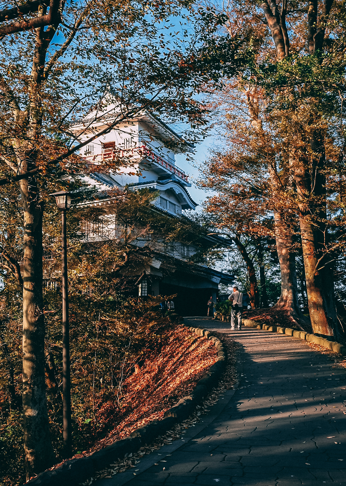
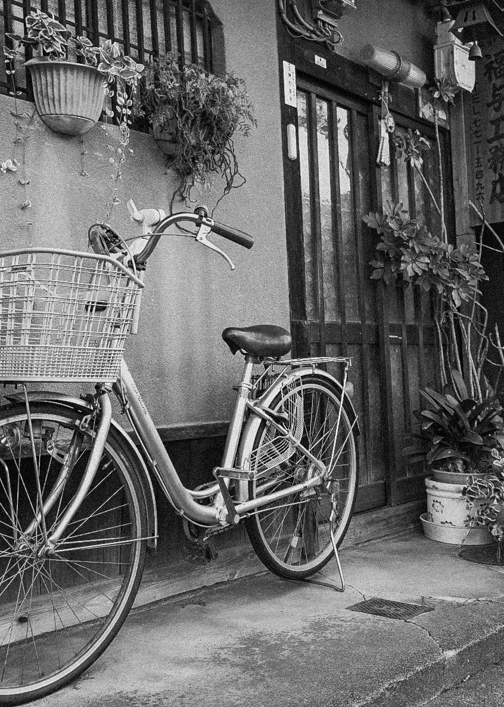
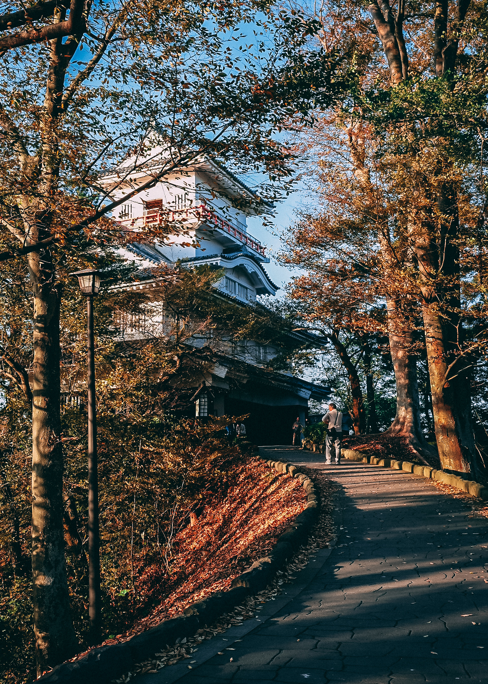
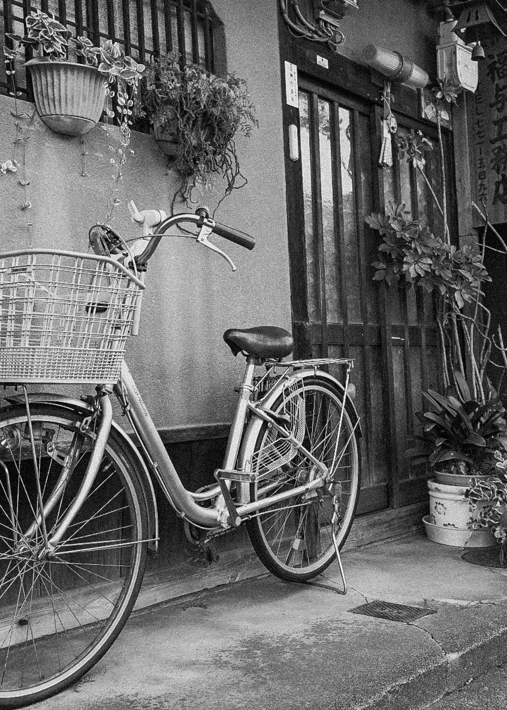
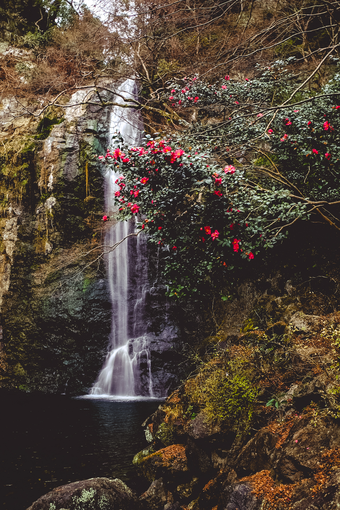
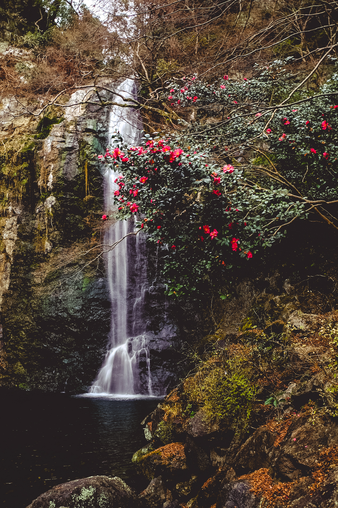
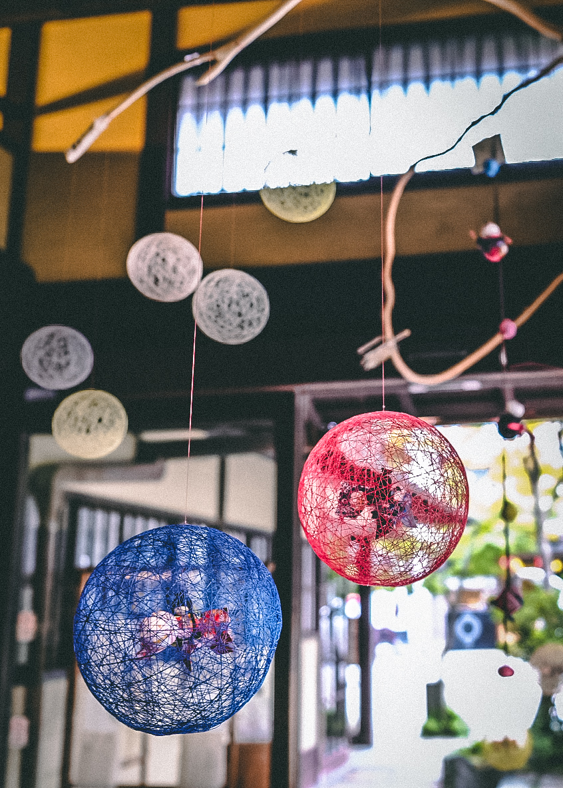
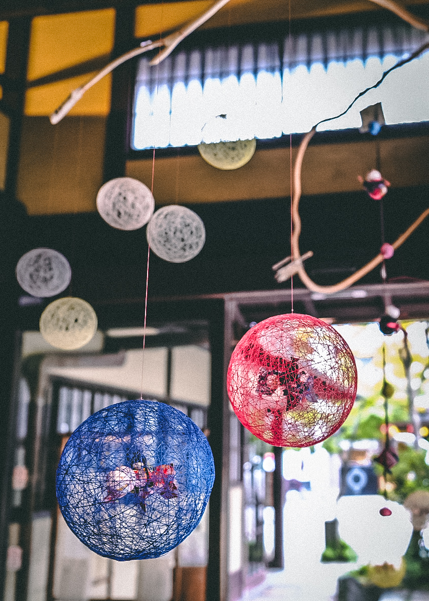
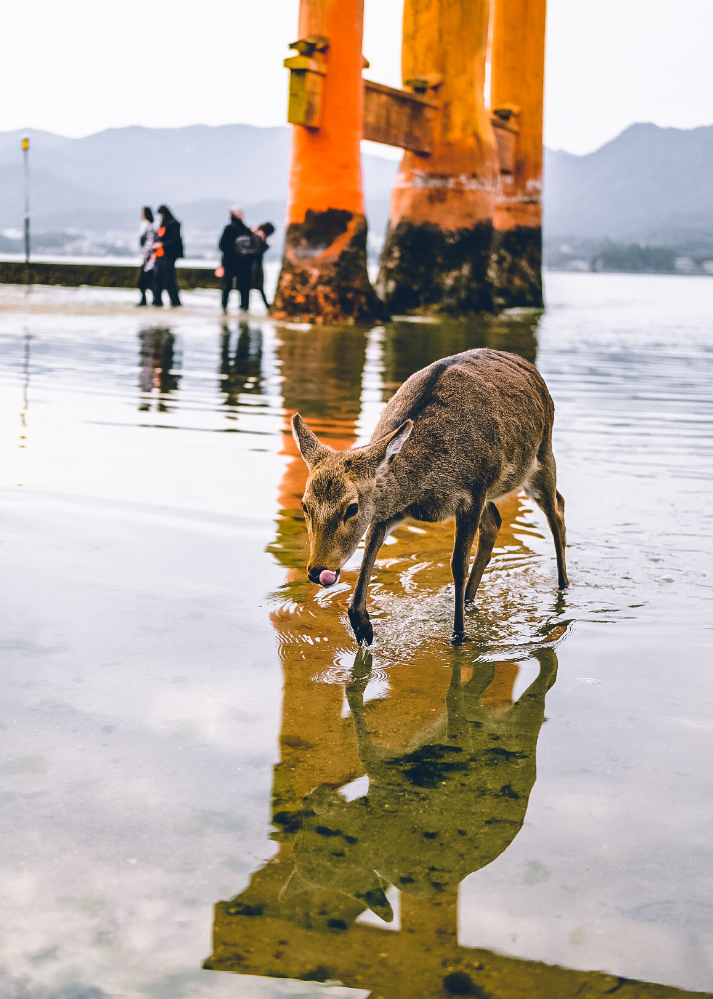
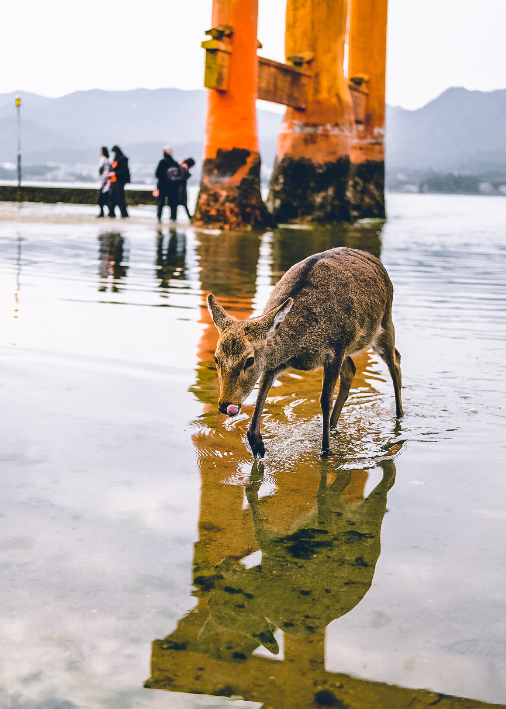

I am a recent graduate of Ithaca College's Emerging Media program, an interdisciplinary major that intersects studies in Computer Science, Media Design and Production, and Strategic Communications. I have a passion for
exploring the intersection between technology and society. My professional goal is to create meaningful and interactive experiences through various forms of technology and media.
As an incoming student to Ithaca College, I was chosen as one of sixty Leadership Scholars for the class of 2020. I love being involved in on campus activities because it allows me to grow as both an individual and a leader as well as make connections across campus.
Member of a student run business that sustainably creates products like maple syrup in the Ithaca College Natural Lands. I help check for sap, carve spoons, and provide content for the website.
Exchange student in Akita Japan during the Fall of 2018 where I studied Japanese & Global History. I also was a member of the Kanto Team, Community Service Club, and an English conversation partner for primary school students
Led a six person team to plan weekly meetings to advocate for the success of women in computing through participating in outreach, hackathons, and conferences.
Run demos on a variety of Virtual Reality equipment such as the HTC Vive & Oculus Rift, research ways to impliment immersive tech in education, and work with faculty to integrate into their curriculum
Attend practices twice a week, play in tournaments, and help with fundraising and other events including but not limited to running events for kids.
Led nine students to Kiptopeke State Park Viginia for a week to complete a variety of park maintenance work projects. In addition, I organized meals, the free day, and nightly reflection sessions.
Trip Video


 



 


 

 
